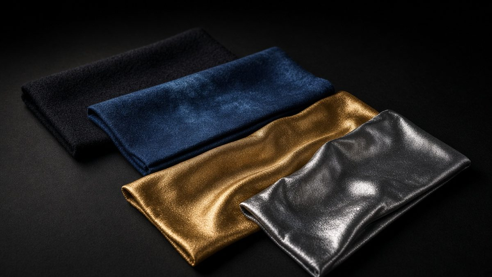
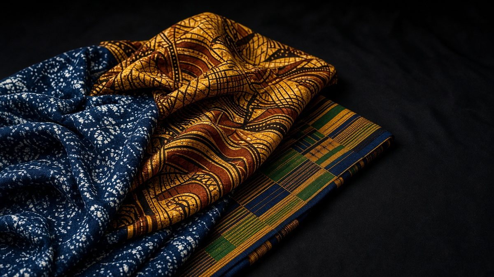
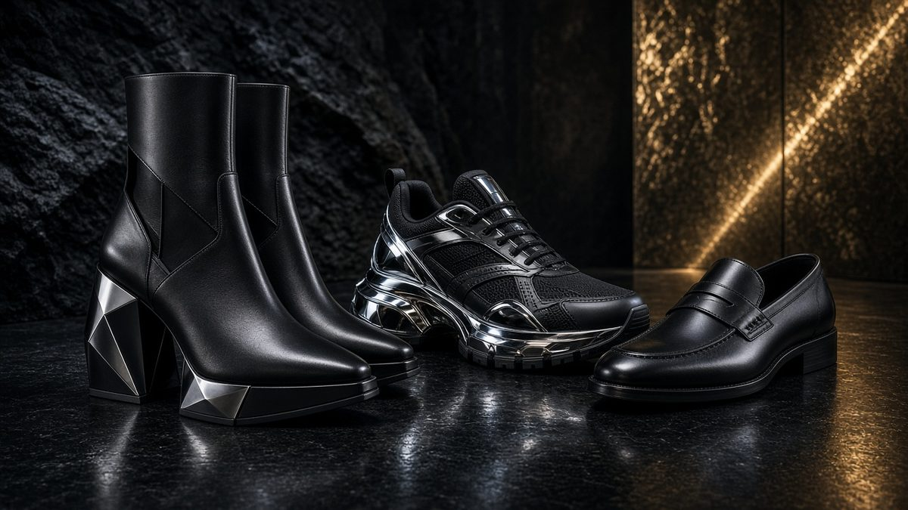
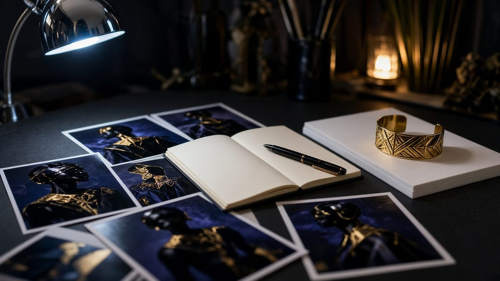
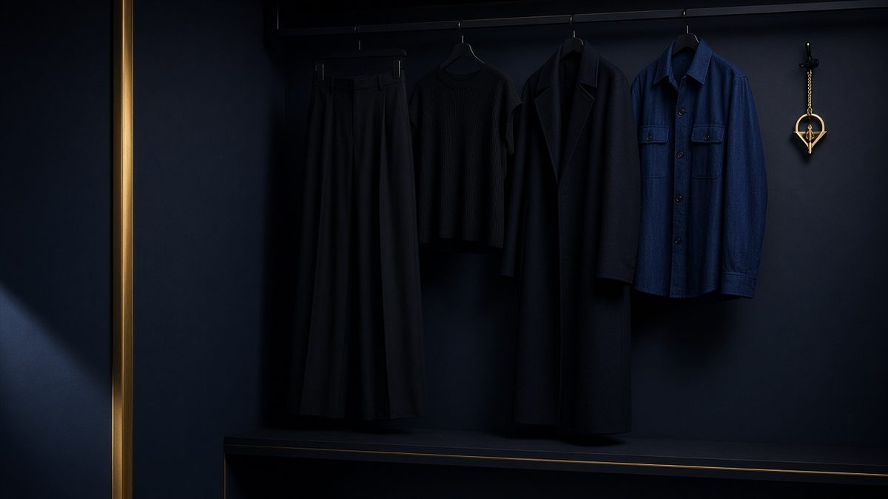
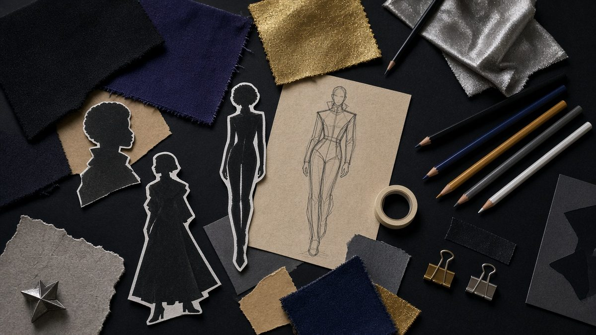
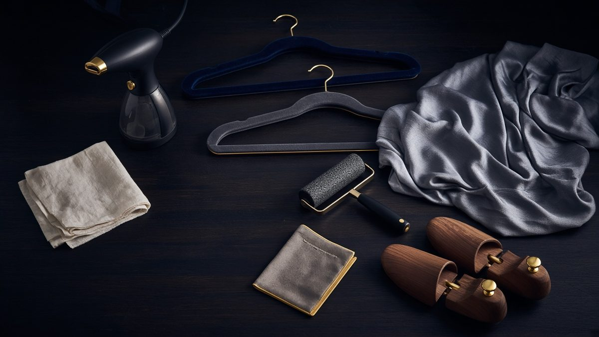

A style desk
Afrofuturist fashion, styled for real life.
Decode the silhouette, keep a memory in the room, and leave with a next step. Neon Sankofa is a practical guide to Afrofuturist fashion, streetwear, and design — written for real closets, not only lookbooks.
The journal
Ten opening essays, ready to publish.
What Afrofuturist Fashion Actually Looks Like (And How to Start Building the Look)
Afrofuturist fashion gets described in two unhelpful ways. One is a cloud of references — Sun Ra, a museum label, a mood board of gold and cowries — that never lands on a body. The other is a…
Read the essay
A Color Guide to Afrofuturist Streetwear: Gold, Indigo, Chrome, and Night
If you look at enough Afrofuturist images, a palette starts to repeat: deep black, a blue that has been dyed rather than just printed, gold that behaves like light, and a colder metal that behaves…
Read the essayHow to Style a One-Piece or Jumpsuit the Afrofuturist Way
A one-piece is one of the most useful garments you can wear if you care about Afrofuturist silhouette, and one of the easiest to leave unfinished. People put one on, add the shoes they wear with…
Read the essay
Ankara, Adire, and Kente in Streetwear: Wear the Print, Not a Costume
A heritage print will not make an outfit Afrofuturist by itself, and it will not embarrass you by itself either. What usually goes wrong is scale and company: a loud cloth asked to share the body…
Read the essay
The Afrofuturist Footwear Guide: Boots, Tech Sneakers, and Grounded Dress Shoes
Clothes can be interesting from the waist up and still look unfinished. The shoe is the base of the statue. It sets the stance, it meets the hem, and it tells the viewer whether they are looking…
Read the essay
How to Read an Afrofuturist Lookbook (And Steal the Silhouette, Not the Logo)
A lookbook is an argument, not a shopping list. The useful ones are arguing about proportion, material, and time: how a body occupies space, what the cloth remembers, and whether the outfit…
Read the essayJewelry and Metals: Cowries, Gold, Beads, and the One-Statement-Piece Rule
On a simple dark outfit, jewelry is often the Afrofuturist signal. A black column with no metal can be complete. A black column with one precise gold object can feel ceremonial in a way no slogan…
Read the essay
An Afrofuturist Capsule Wardrobe You Can Build on a Real Budget
You do not need a costume closet to dress this idea. You need a short list of high-use categories, bought in an order that starts with the ground and not with the loudest object. A real budget —…
Read the essay
From Mood Board to Outfit: A Practical Guide for Designers and Dressers
A mood board is not an outfit. It is a pile of evidence waiting to be named. If you do not name the decisions, you will keep collecting beautiful pictures and then get dressed by habit, or design…
Read the essay
How to Care for Statement Pieces: Metallics, Prints, and Structured Clothes
Statement clothes fail in the laundry room more often than they fail in the mirror. A metallic finish dulls or cracks, a print fades or shines in the wrong place, a jacket loses its shoulder on a…
Read the essay